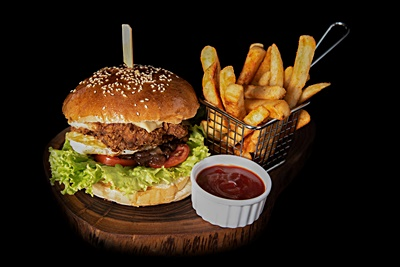

Vamos a cocinar: Hamburguesas

Ingredientes:
- 500 gramos de carne picada
- 1 cebolla picada
- 1/2 taza de pan rallado
- 1 cucharadita de sal
- 1 huevo
- 1/2 cucharadita de pimienta negra
- 4 panes de hamburguesa
- Queso cheddar, para cubrir
- Lechuga, tomate y cebolla, para acompañar
Preparación:
- En un tazón mediano, mezclá la carne picada, la cebolla, el pan rallado, el huevo, la sal y la pimienta negra.
- Dividí la mezcla en 4 porciones iguales y formá las hamburguesas.
- Calentá una parrilla o una sartén a fuego medio-alto.
- Cociná las hamburguesas durante 3-4 minutos por lado, o hasta que estén cocidas al punto deseado.
- Colocá las hamburguesas sobre los panes de hamburguesa y cubrilas con queso cheddar.
- Acompaña con lechuga, tomate y cebolla. Servir.
Consejos:
- Para hamburguesas más jugosas, agregá un chorrito de leche a la mezcla de carne.
- Podés agregarle otros ingredientes a tus hamburguesas, como panceta, jamón, pepinillos, etc.
- ¡Sé creativo y disfrutá de tus hamburguesas!
― Bon Appétit!